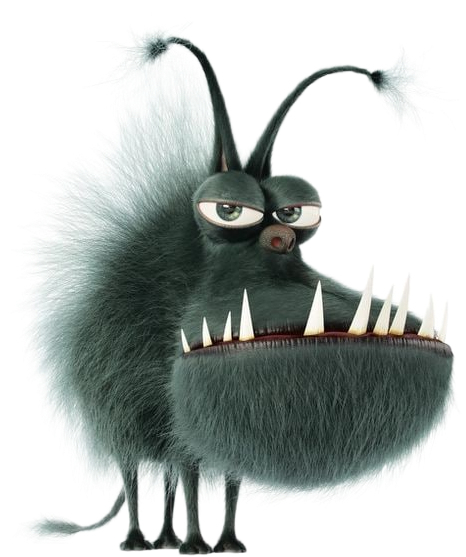

DR. WEB CURELT


Dr. Web - российский разработчик средств информационной безопасности и лидер российского рынка
интернет-сервисов безопасности для поставщиков IT-услуг.
Отличительной особенностью данного антивируса является возможность установить на заражённую
машину, обнаружение и лечение сложных полиморфных, шифрованных вирусов, поддержка большинства
существующих форматов безопасного упакованных файлов и архивов, низкое влияние на
производительность системы.
Утилита Dr. Web Curelt, в отличии от Dr.Web Security Space способна только проверять файлы на вирусы, помещать в карантин и удалять.
Дистрибутив можно скачать на официальном сайте Dr. Web. Окно установки, установка утилиты проходит в 1 шаг.
Утилита Dr. Web Curelt, в отличии от Dr.Web Security Space способна только проверять файлы на вирусы, помещать в карантин и удалять.

УСТАНОВКА ПРОГРАММЫ
|
Платформа [OS]: |
Windows |
|
Разрядность: |
x86 (32-bit) или x64 (64-bit) |
|
ЦП [CPU]: |
от 1 GHz |
|
Винчестер [HDD]: |
330 Mb |
|
Оперативная память [RAM]: |
0.5 Gb |
|
Аудиокарта [AUDIO]: |
Любая |
|
Контроллер: |
Клавиатура, Мышь (64-bit) |
Дистрибутив можно скачать на официальном сайте Dr. Web. Окно установки, установка утилиты проходит в 1 шаг.